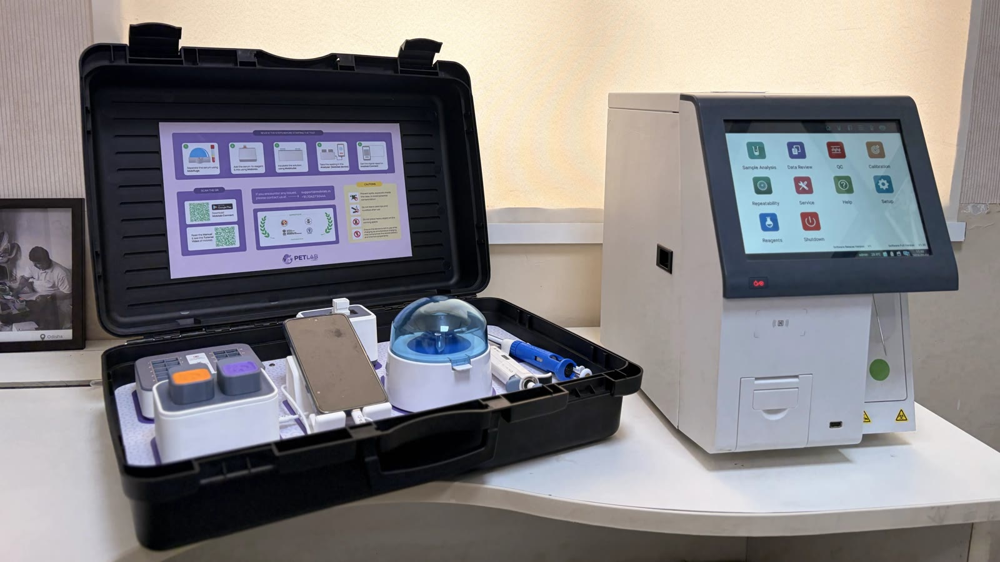
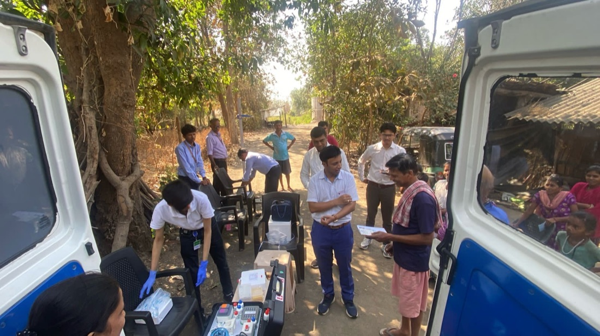

Accurate
Reliable results for confident clinical decisions.
For veterinarians AI point-of-care diagnostics · CDSCO licensed
PETLAB runs the panel where the animal is and hands you an AI-read report before the consultation ends - no courier, no two-day wait.
Validated by
The promise
Reliable results for confident clinical decisions.
Results when you need them most.
A guided workflow designed for veterinary teams.
Digital reports with species-appropriate reference intervals.
The differentiator
The core of what makes PETLAB India's first truly AI point-of-care platform. The intelligence sits on the device, so the analysis happens where the animal is.
Reference ranges and flags adjust automatically to the species recorded for the patient: no manual lookup, no cross-species error.
Every parameter is auto-marked high or low against the right clinical range, so the abnormal result finds you.
The system flags anomalous readings and sample errors before they mislead a diagnosis.
From sample to a structured report, with no waiting on an external laboratory.
Reports and workflow guidance adapt to the veterinarian's preferred language.
Clean, shareable reports synced to the cloud, not a handwritten slip or a static scan.
Wherever care happens
A doorstep service still couriers the sample to a laboratory somewhere else. PETLAB moves the laboratory instead - the analyser travels, and the test runs in the room with the animal.
An in-house lab for small-animal practices: routine screening, pre-anaesthetic checks and monitoring, without sending anything out.
Battery operated and packed in one rugged case. The full workflow runs at the pet parent's door.
Shelters, boarding, rural camps and field work, with no fixed laboratory infrastructure required.
A doorstep collection service
PETLAB
The Shift
Traditionally, veterinary blood testing has depended heavily on external laboratories. PETLAB is changing this workflow.
Today
24–48 hours between the sample and the decision
With PETLAB
~30 minutes, one clinical encounter
With point-of-care testing, selected blood investigations can be performed closer to the animal and the veterinarian, helping bring diagnostic information directly into the clinical encounter. The result is a more connected diagnostic journey designed around speed, accessibility and clinical convenience.
Why this is a revolution
Relevant blood-test information can become available during the veterinary consultation, subject to the specific test and validated application.
Veterinarians can discuss available diagnostic findings with pet parents during the same clinical encounter.
Timely diagnostic information may help veterinarians decide whether further investigation, treatment, monitoring or referral is appropriate.
Point-of-care testing can potentially make repeat monitoring more convenient for selected conditions.
Portable technology can extend diagnostic capabilities to veterinary environments where conventional laboratory infrastructure may not be immediately available.
PETLAB aims to establish point-of-care blood diagnostics as an important part of India's evolving companion-animal healthcare ecosystem.
Product
One rugged case holds the analyser, the reagents and the sample handling. It runs on battery, connects to the PETLAB Connect app, and returns a finished report wherever you have opened it.
See it in action

Every patient, every time
PETLAB is the veterinary vertical of mobilab: India's first AI-powered, portable point-of-care diagnostic platform, built by Primary Healthtech Pvt. Ltd.
mobilab was incubated at IIT Guwahati and manufactures India's first AI-powered portable point-of-care diagnostic device. The platform is CDSCO-licensed and ISO 13485 & 9001 certified, and has been validated by AIIMS Delhi, the Indian Army and GMCH Guwahati.
PETLAB runs on that same certified core: the same AI diagnostic engine recalibrated for animal reference ranges, the same licensed manufacturing and quality infrastructure, and the same pan-India distributor and field network, ready from day one. Roughly six years of point-of-care experience in human diagnostics, now applied to veterinary care.
Visit mobilab.in ↗
Questions
Around 30 minutes from sample to a structured, AI-analysed report, inside a single consultation rather than the 24–48 hours a central-laboratory round trip typically takes.
The intelligence runs on the device. It applies species-specific reference intervals automatically, auto-flags every parameter high or low, and detects anomalous readings and sample errors before they can mislead a diagnosis. Reports come out structured and shareable, in the vet's preferred language.
Eleven parameters across five clinical profiles: Liver (AST, ALT, Total Protein, Albumin, Total Bilirubin), Kidney (Urea, Creatinine), Diabetic (Glucose), Lipid (Cholesterol, Triglyceride) and Haematology (Haemoglobin).
No. The PETLAB Connect app guides the operator step by step, and a veterinary assistant can be fully trained in under a day.
Yes. The unit is battery operated and packed in a single rugged case, so it runs on home visits, at mobile camps and in field settings with no fixed laboratory infrastructure.
The platform is CDSCO licensed (MFG/IVD/2025/000042), ISO 13485 & 9001 certified and IEC ESD compliant (61000-4-2:2008 & 61000-4-8:2009), and has been validated by AIIMS Delhi, the Indian Army, IIT Guwahati and GMCH Guwahati.
Reference intervals are applied automatically from the species recorded for the patient. The specific validated species list is not yet stated in our source documents. Please ask us directly and we will confirm.
Book a demonstration using the form below, email business@mobilab.in, or call +91 93957 14393.
Trust & compliance
PETLAB is the newest vertical from mobilab: India's first AI-powered, portable point-of-care diagnostic platform, now extended from human to veterinary care.
Primary Healthtech Pvt. Ltd., incubated at IIT Guwahati, manufactures India's first AI-powered portable point-of-care diagnostic device.
The same diagnostic engine, recalibrated for animal reference ranges. The same licensed manufacturing, quality infrastructure and pan-India distribution network. Roughly six years of point-of-care experience, applied to veterinary care.
Get in touch
Tell us about your practice and we will get back to you about a demonstration of PETLAB.
“Because every result changes a life.”
Preview interface. The assistant is not connected yet.